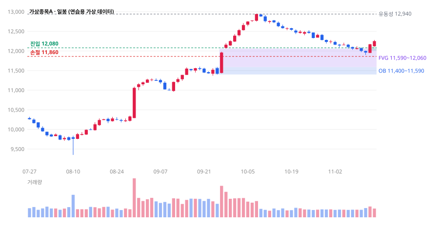

스마트 머니 관점으로 차트를 읽는 AI 스킬 — 시장의 큰 물결을 감지하기
개인 투자자는 눈앞의 캔들 하나에 흔들리기 쉽고, 큰 자금이 천천히 사 모으거나 넘기는 흐름은 놓치기 쉽습니다. 이 스킬은 차트를 매수자와 매도자의 경매 기록으로 읽어, 다우 이론의 추세, 와이코프의 시장 단계, SMC(Smart Money Concepts)의 흔적(오더 블록·FVG·유동성 스윕·거래량)을 한 순서로 점검하고 조건부 매매 시나리오로 정리합니다. 숫자는 도구가 데이터에서 뽑고, AI는 해석과 시나리오를 맡으며, 정확도는 기록으로 확인합니다.
숫자는 데이터에서, 판단은 조건과 무효 조건이 있는 시나리오로, 실력은 기록으로.
AI가 차트 그림에서 가격을 어림하면 진입가와 손절가가 함께 흔들립니다. 가격 데이터(CSV)에서 스윙·구조 돌파·오더 블록을 규칙으로 뽑은 뒤 그 표를 근거로 해석하게 하면, 같은 차트에 같은 답이 나오고 나중에 맞았는지 따져 볼 수 있습니다.
01스킬이 하는 일
종목 · 상위 시간대(HTF) · 하위 시간대(LTF) · 포지션 · 자본금과 1회 허용 손실 · 예정 이벤트
정해진 규칙으로 계산. 미래 데이터를 쓰지 않음
다우: 추세 방향 · 와이코프: 시장 단계 · SMC: 기관의 흔적과 진입 구간
차트 5/5 실행 가능 · 4/5 비중 축소 · 3 이하 관망
매수·매도·관망·분할 매수·분할 매도 중 하나 · 무효 조건 · 대안 · 진입·손절·목표·수량
30건 이상 쌓이면 규칙이 실제로 통하는지 숫자로 확인
02세 가지 틀
추세의 방향
종가 기준 고점과 저점이 함께 높아지면(HH·HL) 상승, 함께 낮아지면(LH·LL) 하락. 큰 추세를 따르고 작은 흔들림은 잡음으로 봅니다.
시장의 단계
축적 → 상승 → 분배 → 하락. 거래량으로 “노력 대 결과”를 따져 지금이 어느 단계인지 진단합니다.
큰 자금의 흔적
변위 캔들, 오더 블록, FVG(가격 공백), 유동성 스윕. 큰 주문이 지나간 자리를 진입·손절 구간으로 씁니다.
일곱 가지 규칙
| 규칙 | 내용 |
|---|---|
| 1 주 추세를 따른다 | 주봉·일봉 스윙으로 방향을 정하고 역추세 계획은 세우지 않습니다. |
| 2 꼬리보다 종가 | 꼬리로만 넘었다 돌아오면 유동성 스윕일 수 있습니다. 구조 돌파는 종가로 확정합니다. |
| 3 상승 단계에서 적극적으로 | 축적은 기다리고, 분배는 가짜 돌파를 경계하고, 상승 단계에서 거래량과 변위를 확인한 뒤 참여합니다. |
| 4 추격 대신 되돌림 | 직전 파동의 약 33~66% 되돌림에서 OB·FVG 재방문을 기다립니다. |
| 5 오더 블록의 세 조건 | 변위 · FVG · 구조 돌파가 모두 있을 때만 유효한 OB로 봅니다. |
| 6 노력 대 결과 | 돌파 때 거래량 증가, 되돌림 때 수축이 건강한 흐름. 고점 갱신인데 거래량이 줄면 다이버전스입니다. |
| 7 추세의 정의 | 직전 주요 스윙 저점이 종가로 깨지지 않는 한 상승 추세가 유지됩니다. |
03설계를 다듬은 일곱 곳
틀과 규칙은 그대로 두고, 실제로 써 보면서 결과가 흔들리거나 오해를 부를 수 있는 곳을 고쳤습니다.
smc_tool.py facts로 사실 표를 먼저 만들고 AI는 그 표를 근거로 해석하도록 바꿨습니다. 이미지만 있을 때는 읽은 숫자에 ≈를 붙이고, 핵심 가격이 불분명하면 묻게 했습니다.04사실 추출 도구 — smc_tool.py
Python 3.8 이상, 추가 설치 없이 동작합니다. 스킬 안(scripts/)에도 같은 파일이 들어 있어 코드 실행이 되는 환경에서는 스킬이 직접 돌립니다.
| 명령 | 하는 일 |
|---|---|
facts | OHLCV CSV → 종가 스윙·추세, 구조 돌파(BOS/MSS), 오더 블록 후보와 세 조건, FVG와 메움 상태, 유동성 스윕, 거래량 비율·노 서플라이·다이버전스, 되돌림 비율, 다음 유동성 풀 |
size | 자본금·허용 손실·진입·손절·목표 → 수량, 손절 시 손실, 손익비(수수료·미끄러짐 포함) |
stats | 매매 기록 CSV → 적중률, 평균 R, 기대값, 최대 낙폭, 판정별 성과, 표본 크기 경고 |
규칙을 숫자로 정한 방식
| 요소 | 도구의 정의 |
|---|---|
| 스윙 | 종가가 좌우 3봉(--k로 변경)보다 높으면 스윙 고점, 낮으면 스윙 저점. 마지막 3봉은 미확정 |
| BOS / MSS | 종가가 직전 확정 스윙을 넘는 순간. 직전 흐름과 같은 방향이면 BOS(지속), 반대면 MSS(전환). 스윙은 확정된 시점부터만 사용해 미래 데이터를 쓰지 않음 |
| 변위 | 몸통이 봉 전체의 65% 이상이고 봉 길이가 ATR(14)의 1.3배 이상 |
| FVG | 3봉 중 1봉 고가 < 3봉 저가(상승). 이후 가격이 들어오면 일부·모두 메움으로 표시 |
| 오더 블록 | 구조 돌파를 만든 변위 직전의 마지막 반대색 캔들. 변위·FVG·돌파 세 조건 표시, 종가로 원위선을 이탈하면 무효 |
| 유동성 스윕 | 꼬리로만 직전 스윙을 넘고 종가는 안쪽에서 마감 |
| 노 서플라이 | 마지막 돌파 이후 평균 거래량이 돌파 구간의 0.7배 미만 |
python smc_tool.py facts sample/daily.csv --name 가상종목A --tf 일봉
python smc_tool.py size --capital 10000000 --risk 1 --entry 12080 --stop 11860 --target 12940 --fee 0.2
python smc_tool.py stats 내매매기록.csvCSV 만드는 법은 data-guide.md — 증권사 HTS의 엑셀 내보내기나 트레이딩뷰의 차트 데이터 내보내기를 씁니다.
05시범 분석 — 가상종목A
실제 종목 대신, 축적 → 스프링 → 상승 → 되돌림의 전형적인 흐름을 담아 만든 연습용 가상 데이터(일봉 140개, 60분봉 120개)로 시범을 보입니다. 같은 파일로 누구나 똑같이 재현할 수 있습니다.

한국식 색: 상승 빨강, 하락 파랑. 진입·손절선은 아래 시나리오 A의 값입니다.
① 사실 표 (facts 출력 요약)
| 항목 | 일봉 | 60분봉 |
|---|---|---|
| 추세 | 상승 (고점 11,560→12,940, 저점 11,000→11,420) | 중립·전환 중 |
| 마지막 구조 돌파 | 9/25 상향 BOS (11,560 돌파, 거래량 1.7배) | 11/13 09:00 상향 MSS (12,190 돌파, 거래량 2.4배) |
| 오더 블록 | 9/24 11,590~11,400 · 세 조건 충족 · 미방문 | 11/11 15:00 11,970~11,960 · 충족 · 매우 얇음 |
| FVG | 상승 11,590~12,060(일부 메움), 12,010~12,110(미체결) · 하락 12,290~12,340 | |
| 스윕 | 8/11 하단 스윕(박스 하단 꼬리 이탈 후 복귀) | |
| 거래량 | 되돌림 ÷ 돌파 구간 = 0.52 (수축) · 고점 다이버전스 있음 | MSS 뒤 수축 0.47 |
| 되돌림 | 10,960→12,950 파동의 53%(11/11 저점), 현재 35% |
② 스킬의 판정
시장 단계: 상승(markup) 중 되돌림 — 박스권 축적, 8/11 스프링, 8/27 상향 MSS 뒤 장대 양봉, 9/25 BOS
흔적(가설): 되돌림 거래량 0.52배 → 노 서플라이로 해석 가능
경계: 일봉 다이버전스, 위쪽 하락 FVG 12,290~12,340, 이벤트 모름
점검표: 시간대 ✅ · 거래량 ✅ · 구간 ✅ · 손익비 ✅ · 맥락 ❓ → 차트 4/5 → 비중 축소
판정: 분할 매수 (조건부)
A: MSS 뒤 지금 가격(12,250)은 추격하지 않음. 일봉 FVG 12,010~12,110 되돌림에서 두 번에 나눠 진입
무효: 일봉 종가 11,880 이하(11/11 저점 11,900 이탈) → A 폐기
B: 무효 시 일봉 OB 11,400~11,590까지 기다렸다가 60분봉 MSS 재확인
C: 되돌림 없이 12,340 위로 가면 추격하지 않고 다음 되돌림 대기
실행: 진입 12,080 · 손절 11,860(ATR의 1.9배) · 목표 12,520(2R) / 12,940
손익비 1:3.0(수수료 0.2% 포함) · 수량 373주 → 4/5이므로 186주부터
자기 점검(사용자): 장대 양봉을 보고 따라 사고 싶은 마음은 아닌가? 손절 주문을 미리 걸 수 있나?전체 보고서는 report.md, 사실 표 원문은 facts-daily.md · facts-hourly.md.
06정확도를 확인하는 법
테스트에서 좋은 결과를 얻었다면, 그 결과를 다른 사람도 재현할 수 있게 기록으로 남기는 것이 다음 단계입니다. journal-template.csv에 판정을 낼 때마다 한 줄씩 적고, stats로 계산합니다.
- 기록 12건 · 청산까지 끝난 거래 10건 · 관망 2건
- 적중률 60% (6승 4패)
- 평균 R +0.70 · 이긴 거래 평균 +1.83R · 진 거래 평균 -1.00R
- 기대값(거래 1건당) +0.70R — 0보다 커야 규칙이 돈을 법니다.
⚠ 표본이 10건입니다. 30건 미만의 적중률은 우연과 구분하기 어렵습니다.
적중률의 대략적인 95% 범위: 30% ~ 90%정확도를 잴 때 주의할 점
- 적중률보다 기대값. 적중률 40%라도 이길 때 3R, 질 때 1R이면 돈을 벌고, 적중률 70%라도 손익비가 나쁘면 잃습니다. 판정마다 진입·손절·목표를 먼저 적어야 R로 잴 수 있습니다.
- 결과 기준을 미리 정하기. “목표나 손절 중 먼저 닿은 쪽”, “10거래일 지나면 종가 청산”처럼 결과를 판정하는 규칙을 기록 전에 정합니다. 나중에 유리한 지점을 고르면 정확도가 부풀려집니다.
- 지난 차트로 시험할 때. 이미 결과를 아는 구간을 보면 사람도 AI도 결과에 끌려갑니다. 특히 AI는 유명 종목의 과거 흐름을 학습했을 수 있으므로, 종목명과 날짜를 지운 데이터나 학습 시점 이후의 최근 데이터로 시험하는 것이 공정합니다. 가장 좋은 방법은 앞으로 생기는 차트에 판정을 먼저 적고 결과를 기다리는 것(전진 시험)입니다.
- 표본 30건 이상. 10건의 60%는 실제 실력이 30%일 수도 90%일 수도 있는 범위입니다.
- 비교 기준 두기. 같은 기간 그냥 보유했을 때, 무작위로 진입했을 때와 비교해야 규칙이 더한 가치를 알 수 있습니다.
- 관망도 기록하기. 관망 판정 뒤 가격이 어떻게 움직였는지도 남기면, 놓친 기회와 피한 손실을 함께 볼 수 있습니다.
07플랫폼별 설치
스킬 본문은 약 3,400자라 네 플랫폼 모두 지침 칸에 그대로 들어갑니다. 자세한 안내는 platforms.md.
- Claude설정의 스킬 메뉴(Customize → Skills)에
smart-money-chart-analyst.zip을 올립니다. Claude Code는 폴더를~/.claude/skills/에 복사합니다. 코드 실행이 켜져 있으면 CSV를 받아 스킬이 직접facts를 돌립니다. - ChatGPT프로젝트(또는 GPT)의 지침 칸에 SKILL.md 본문, 파일 칸에
framework.md·output-template.md·smc_tool.py를 올립니다. - Gemini스킬 전환 계정은 스킬 메뉴에서 ZIP을 올리고
/smart-money-chart-analyst로 부릅니다(13편 3장). 전환 전이면 Gem의 요청 사항·지식 칸을 씁니다. 스크립트 실행이 제한되므로facts출력을 붙여 넣는 방식을 기본으로 합니다. - CopilotCopilot Studio 에이전트의 지침 칸(최대 8,000자)에 본문, 지식에 참고 파일 두 개를 올립니다.
/smart-money-chart-analyst
종목: 가상종목A · 시간대: 일봉(HTF), 60분봉(LTF) · 포지션: 없음
자본금 1,000만 원, 1회 허용 손실 1% · 이벤트: 모름
(daily.csv, hourly.csv 첨부 — 또는 facts 출력 붙여 넣기)08주의할 점
| 상황 | 주의할 점과 바로잡는 방법 |
|---|---|
| 이미지에서 읽은 가격으로 주문할 때 | 어림값입니다. 진입·손절은 HTS의 실제 호가와 CSV 값으로 다시 확인합니다. |
| 진행 중인 봉으로 판단할 때 | 종가가 확정되지 않았습니다. 구조 돌파·무효 조건은 봉이 끝난 뒤 판단합니다. |
| 하위 시간대 신호만 보고 진입할 때 | 주 추세와 반대인 60분봉 반전은 잡음일 가능성이 큽니다. 상위 시간대 방향을 먼저 봅니다. |
| 손절을 ATR보다 좁게 둘 때 | 평범한 흔들림에 걸립니다. 손절 폭을 넓히고 수량을 줄여 위험 금액을 맞춥니다. |
| 갭이 잦은 종목·실적 발표일 | 손절가보다 불리하게 체결될 수 있습니다. 이벤트 전에는 비중을 줄이거나 관망합니다. |
| “기관이 샀다”고 단정할 때 | 차트는 누가 샀는지 보여 주지 않습니다. 한국 주식은 투자자별 매매동향(확정치)으로 교차 확인합니다. |
| SMC 용어를 절대 법칙처럼 쓸 때 | 오더 블록·FVG 같은 SMC 용어는 비교적 최근 트레이더 사이에서 정리된 개념으로, 정의가 사람마다 조금씩 다르고 학술적 검증은 많지 않습니다. 이 스킬은 도구의 정의(4장)로 고정해 일관성을 지키고, 효과는 6장의 기록으로 확인합니다. |
| 적은 표본의 높은 적중률 | 30건 미만은 우연과 구분하기 어렵습니다. 기대값과 비교 기준을 함께 봅니다. |
| 레버리지·신용·미수 | 스킬은 레버리지를 권하지 않습니다. size가 투입 금액이 자본금보다 크다고 경고하면 수량을 줄입니다. |
| 분석 결과를 남에게 유료로 제공할 때 | 개인이 자기 매매에 쓰는 것은 문제가 없지만, 불특정 다수에게 돈을 받고 투자 조언을 하려면 자본시장법상 유사투자자문업 신고가 필요합니다. 2024년 8월 개정법 시행 후에는 유료 회원과 단체 대화방처럼 양방향으로 의견을 주고받으면 투자자문업(등록 대상)으로 보며, 수익 보장 광고도 금지됩니다. 1:1 맞춤 조언은 투자자문업 영역입니다. |
부록출처
- Wikipedia, Dow theory — 주 추세의 세 국면
- Wyckoff Analytics, The Wyckoff Method — 축적·상승·분배·하락, 노력 대 결과, 스프링
- 키움증권 도움말, [0796] 종목별투자자 — 투자자별 매매동향의 잠정치·확정치 시각
- 대륜 뉴스레터, 개정 자본시장법(2024. 8. 14. 시행) — 유사투자자문업 범위·광고 규제
- 경기일보, 유사투자자문 리딩방 실태 (2026. 5.) — 자본시장법 제101조 신고 의무
- 작성자 스킬 「smart-money-chart-analyst」 — 3단 분석, 7가지 규칙, 4단계 진단, 점검표, 3M 리스크 관리의 틀
함께 읽기: 13편 AI 영상 파이프라인 · 11편 AI 합의 협의체 — 중요한 매매 판단을 여러 관점에서 반박해 보고 싶다면 협의체를 함께 쓰세요.